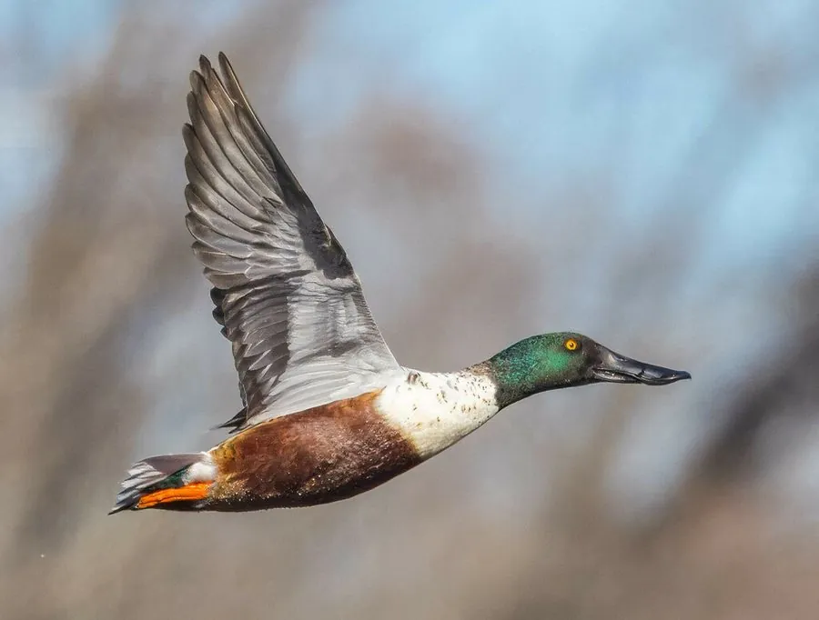

鸟类 · 动物界
琵嘴鸭 Spatula clypeata

喙端膨大呈勺状的鸭类，雄鸟头颈深绿、胸腹白色，用宽扁的喙在水面滤食浮游生物，是常见的冬候鸟。
- 分类
- 门脊索动物门纲鸟纲目雁形目科鸭科属匙嘴鸭属
- 栖息环境
- 湖泊、沼泽、水田、河口与沿海湿地，常在浅水中滤食
- 地理分布
- 北半球广泛分布，中国大部分地区有越冬记录，北方也有繁殖
- 保护级别
- IUCN 无危（LC）；中国“三有”保护动物
物种志
琵嘴鸭体长 44–52 cm，体重 400–1100 g。雄鸟头部和颈部呈深绿色，胸部白色，腹部栗红色，背部褐色，翅膀上有蓝绿色翼镜；雌鸟通体棕褐色并带斑纹。它最醒目的特征是宽大而扁平的喙，末端膨大呈勺状，喙缘有细密的梳状结构，适合滤食。
琵嘴鸭广泛分布于北半球的湖泊、沼泽、水田和沿海湿地，中国大部分地区有越冬种群，北方也有繁殖记录。它们用宽扁的喙在水面旋转滤食浮游动物、种子和昆虫，常与其他鸭类混群活动。繁殖期在水边草丛中营巢，每窝产卵 8–12 枚，孵化 22–24 天。琵嘴鸭目前被列为无危物种，中国将其列入“三有”保护名录。
形态与习性
- 食性浮游动物、水生植物种子和昆虫
- 体长44–52 cm
- 体重400–1100 g
- 繁殖每窝 8–12 枚卵，孵化 22–24 天
- 喙形宽扁，末端膨大呈勺状，适合滤食
- 寿命野外约 10 年
趣味知识
- 琵嘴鸭的喙宽扁呈勺状，喙缘有梳状结构，适合在水面滤食。
- 雄鸟头颈深绿、胸腹白色，与雌鸟低调的棕褐色差别很大。
- 它们常在水面上旋转搅动，使食物悬浮后再用喙过滤。